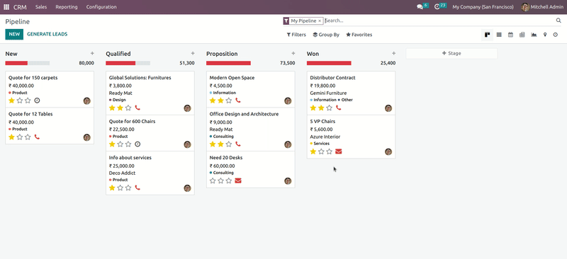

Kanban Drag Restriction for Won Stages
This module provides a simple solution to prevent dragging of records in Kanban views when they are in a "won" stage.
Overview
This module provides a simple solution to prevent dragging of records in Kanban views when they are in a "won" stage. In many business workflows, once a record has reached a "won" stage, it should no longer be moved or modified. This module ensures data integrity and workflow consistency by restricting the ability to drag such records within the Kanban view.
Features
- Automatically restricts dragging of records in Kanban views when they are in a "won" stage.
- Enhances data integrity and ensures workflow consistency.
- Easy to install and configure without requiring complex setups.
- Seamlessly integrates into existing Odoo environments without disrupting current workflows.
- Compatible with all versions of Odoo.
- Restrict dragging only within the Kanban view; stage changes can still be made from the form view when necessary.
How it works?

For further assistance, please contact me at aravindu28@gmail.com